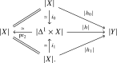

Recall from Definition 1.6.19 the notion of an embedding, which we may think of as a monomorphism of categories. This notion is the first in a hierarchy of notions of \(n\)-truncation for every integer \(n \geq -1\). In particular, we obtain notions of \(n\)-truncated categories for every \(n\). For example, the \((-1)\)-truncated animae are categories \(P\) such that the map \(P \to *\) is an embedding; we will refer to such categories as propositions and denote their full subcategory by \(\Prop\).
The Čech nerve gives an explicit construction of \((-1)\)-truncation: it factors a map of animae as a cover followed by an embedding. We then develop the general truncation hierarchy, set and poset truncation, and constructive notions of finite and \(\pi\)-finite animae.
Before defining the general hierarchy of truncation levels, we will discuss one special case: the \((-1)\)-truncation operation. We will see that there is a very explicit description of this operation in terms of the Čech nerve of a morphism.
Definition 11.1.1. Since \(\An\) admits small limits, the functor \[ \ev_{[0]}\colon \PSh(\simp) \to \An\ , \quad X \mapsto X_0 = X([0]) \] admits a right adjoint \[ \check{C}\colon \An \to \PSh(\simp) \] given by right Kan extension along the functor \(i=[0]\colon * \to \simp\catop\). We refer to the simplicial anima \(\check{C}(X)\) as the Čech nerve of \(X\).
Remark 11.1.2. Using the pointwise formula for right Kan extensions, we may concretely describe the evaluation of \(\check{C}(X)\) at \([n] : \simp\catop\) as follows. \[ \check{C}(X)_n \simeq X^{n+1}\, . \] Indeed, the right Kan extension at \([n]\) is indexed by maps \([n]\to[0]\) in \(\simp\catop\), or equivalently by maps \([0]\to[n]\) in \(\simp\). This indexing anima is \[ (h_{[n]})_0 = \Hom_{\simp}([0],[n]) = [n]^{\simeq}\, ; \] using that \((C \star [0])^{\simeq} \simeq C^{\simeq} \sqcup e\), by Proposition 3.6.9, we observe furthermore by induction on \(n\) that \[ [n]^{\simeq} = \{0, \dots, n\}\, , \] where \(\{0, \dots, n\}\) is defined inductively by \[ \{0, \dots, 0\}=[0]\quad\text{and}\quad \{0, \dots, n+1\}=\{0, \dots, n\}\sqcup [0]\, . \] It follows that, for \(X \in \An^{\simeq}\), we have \[ \check{C}(X) \colon \simp\catop \to \An, \qquad \check{C}(X)_n = \Hom_{\An}(\{0, \dots, n\}, X)\, . \] By a new induction, one can show that this simplifies to \[ \check{C}(X)_n \simeq X^{n+1}\, , \] where the right-hand side is defined inductively via \(X^0 = e\) and \(X^{n+1} = X^n \times X\).
Remark 11.1.3. Since \(i\colon * \to \simp\catop\) is fully faithful, also \(i_!\) is fully faithful, so the unit \(\id \iso i^*i_!\) is an isomorphism. Passing to right adjoints, also the counit \(i^*i_* \to \id\) is an isomorphism, so that \(i_*\) is fully faithful.
Lemma 11.1.4. For any functor \(Y\colon \simp\catop \to \An\), the morphism \(\abs{\pr_2}\colon \abs{\Delta^1 \times Y} \to \abs{Y}\) is an isomorphism.
Proof
Under the equivalence \(\abs{\Delta^1 \times Y} \simeq \abs{\Delta^1} \times \abs{Y}\) from Proposition 10.4.9, the map \(\abs{\pr_2}\colon \abs{\Delta^1 \times Y} \to \abs{Y}\) corresponds to the projection map \(\pr_2\colon \abs{\Delta^1} \times \abs{Y} \to \abs{Y}\). So it remains to show that \(\abs{\Delta^1} \simeq *\). Since \(\Delta^1\) is the presheaf on \(\simp\) represented by \([1]\in \simp\), this is an instance of Corollary 12.6.1.
Corollary 11.1.5. Given simplicial animae \(X,Y \colon \simp\catop \to \An\) and a simplicial homotopy \(h\colon \Delta^1 \times X \to Y\), we have \(\abs{h_0} = \abs{h_1}\) as maps \(\abs{X} \to \abs{Y}\).
Proof
Consider the diagram

Consider morphisms \(f\colon X \to Y\) and \(g\colon X \to Y\) in \(\An\). Then there is a one-to-one correspondence between commutative diagrams and extensions
Corollary 11.1.6. If there is a map \(x\colon e \to X\), then \(\abs{\check{C}(X)}\) is contractible.
Proof
The extension preceding the statement gives a simplicial homotopy from the constant endomorphism \(X\to e\xrightarrow{x}X\) of \(\check C(X)\) to its identity. By Corollary 11.1.5, the identity of \(\abs{\check C(X)}\) is therefore equal to the constant map with value induced by \(x\), which is a contraction.
Construction 11.1.7. All of the above applies in any anima context. Let \(Y\) be a small anima and let \(f\colon X \to Y\) be a morphism of small animae, i.e. an anima \((X,f)\) in context \(Y\). We have an adjunction Here \(\check{C}(f)\) is the anima \(\pi_f\colon \check{C}(X/Y) \to Y\) in context \(Y\), obtained by applying the Čech nerve construction in context \(Y\) to the anima \(f\colon X\to Y\) in context \(Y\). We will refer to \(\check{C}(f)\) as the Čech nerve of \(f\).
Remark 11.1.8. Let \(C\) be a category that admits small colimits. Then also the slice \(C_{/y}\) admits small colimits for any object \(y\) of \(C\), and the forgetful functor \(C_{/y} \to C\) preserves small colimits.
So for any morphism \(f\colon X \to Y\) of small animae we obtain a map \(\abs{\pi_f}\colon \abs{\check{C}(X/Y)} \to Y\).
Theorem 11.1.9. Consider a morphism \(f\colon X \to Y\) of small animae. If \(f\) admits a section, then the map \(\abs{\pi_f}\colon \abs{\check{C}(X/Y)} \to Y\) is an equivalence.
Proof
This is an instance of Corollary 11.1.6 applied in context \(Y\).
Let \(X\) and \(T\) be objects of \(\An\). We may consider the projection map \(f = \pr_2\colon X \times T \to T\). Note that this is the image of the map \(X \to *\) under the pullback functor \(\An \to \An_{/T}\), and it follows that \[ \check{C}(X \times T/T) \simeq \check{C}(X) \times T \] as simplicial objects in \(\An_{/T}\). We then get \[ \abs{\check{C}(X \times T/T)} \simeq \abs{\check{C}(X) \times T} \simeq \abs{\check{C}(X)} \times T. \]
Taking \(T = X\), the projection map \(\pr_2\colon X \times X \to X\) admits a section, given by the diagonal. By Theorem 11.1.9, it follows that \[ \abs{\check{C}(X \times X/ X)} \iso X. \]
This proves:
Corollary 11.1.10. For every small anima \(X\) the projection map \(\pr_2\colon \abs{\check{C}(X)} \times X \to X\) is an equivalence.
Theorem 11.1.11. Let \(X\) be a small anima. Then the anima \(\abs{\check{C}(X)}\) is a proposition, in the sense that \(\abs{\check{C}(X)} \to *\) is an embedding.
Proof
Consider the anima \(T = \abs{\check{C}(X)}\). By the previous corollary, the projection map \(f = \pr_1\colon X \times T \to X\) is an equivalence. We thus get \[ \check{C}(X \times T/T) \iso \check{C}(X) \times T \iso \check{C}(X), \] where the second equivalence is levelwise: in degree \(n\) it is the projection \(X^{n+1}\times T\to X^{n+1}\), obtained by pulling back \(X\times T\to X\) along the first coordinate \(X^{n+1}\to X\). Taking geometric realizations gives \[ T \times T \iso \abs{\check{C}(X \times T/T)} \iso T. \] It follows that \(T\) is a proposition.
Corollary 11.1.12. Let \(f\colon X \to Y\) be any morphism in \(\An\). Then the morphism \(\abs{\pi_f}\colon \abs{\check{C}(X/Y)} \to Y\) is an embedding.
Proof
Apply Theorem 11.1.11 in context \(Y\).